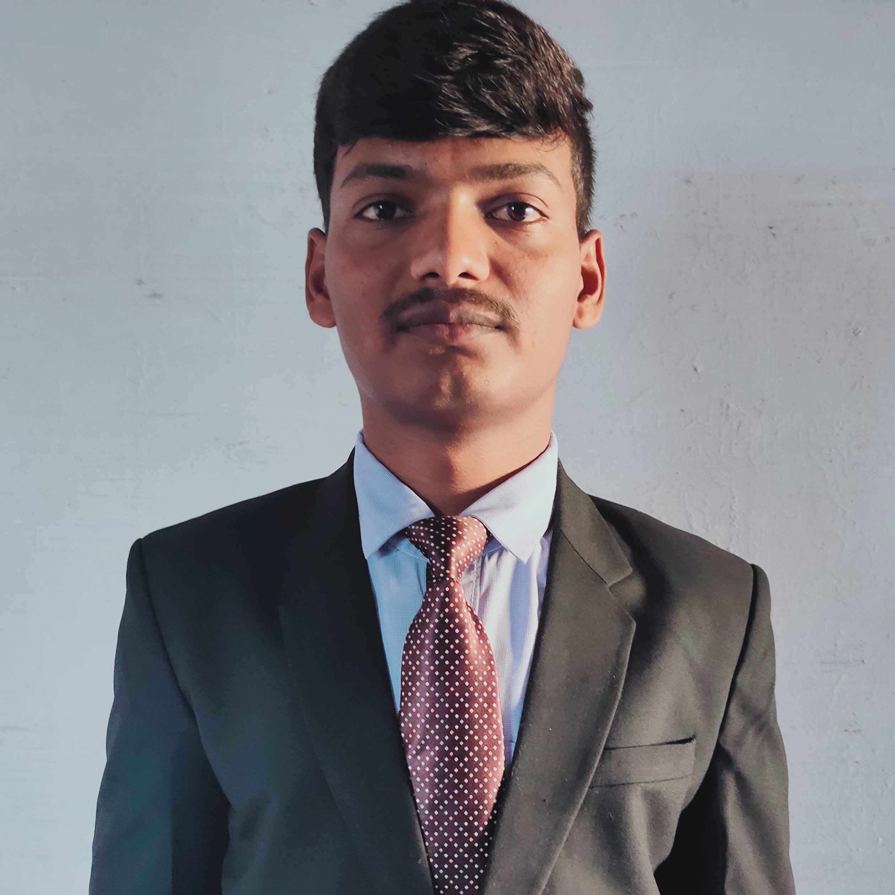

Pakkirappa Talari

Summary
Results-driven Senior Engineer with 1.5 years of experience in the IT industry and 1 year in Teaching Field,
specializing in agile methodologies and process optimization.
I am passionate about delivering high-impact projects and fostering cross-functional collaboration.
I am seeking a Front End Developer role at Reputed Company,
where I can leverage my expertise to drive innovation, streamline operations, and contribute to your company's continued success
Education
- Master of Technology - NIT Calicut (2019-2021)
- Bachelor of Technology - Sri Venkateswara University Tirupati(2015-2019)
Work Experience
-
Senior Engineer - Movate Technologies Pvt Ltd (2022 Sep - Present)
- Analysing and manipulating the code written in HTML and JavaScript. Data Extraction with custom queries and
constants in JSON Configurations.
- Scraping of the data from the website as per client’s specifications. Data Transformation and Validation of
scraped data using client’s tools.
-
Assistant Professor (2021 Aug - 2022 Aug)
- Taught Various Civil Engineering Subjects and Constitution of India
- Guided three batches’ students in mini and major projects
Skills
- Front-End Technologies - HTML, CSS, Bootstrap, JavaScript and ReactJS
- Back-End Technologies - Python, NodeJS
- Databases - MySQL, MongoDB
Awards & Certifications
- Certified Full Stack Developer at Nxtwave
Other Details